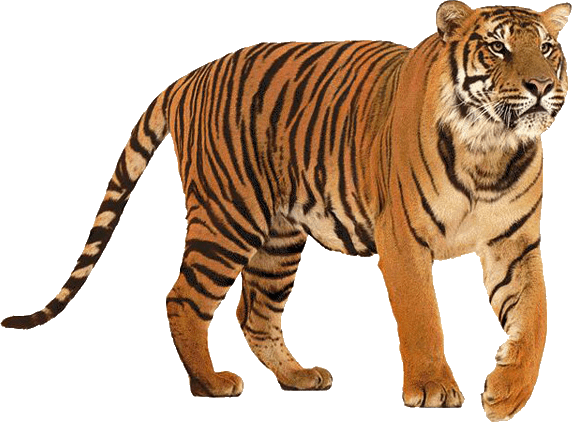

|  | Animal Comparation | |||
|---|---|---|---|---|
| Region | Color | Habitat Range | Average Weight | |
| Sumatran Tiger | Indonesia | Darker with a tan colored | Lowland forests | 120 kg (264,5 pounds) |
| Bengal Tiger | India | Yellow to light orange with black or dark brown stripes | High cold altitudes to the hot steamy mangroves | 220 kg (500 pounds) |